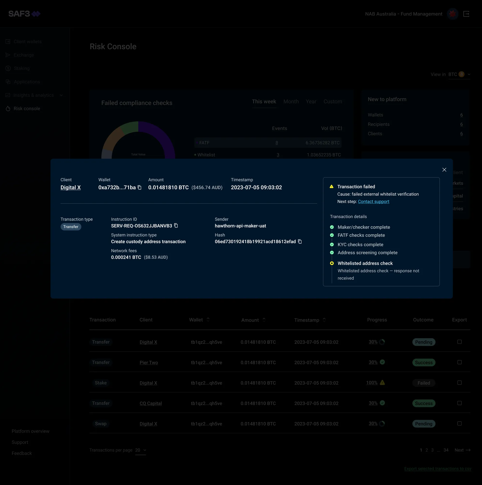
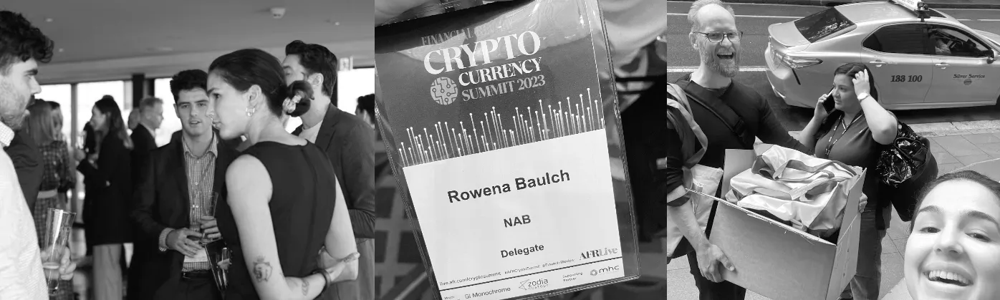
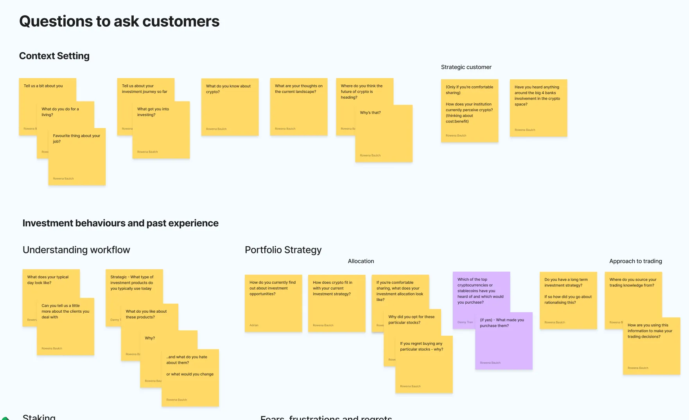
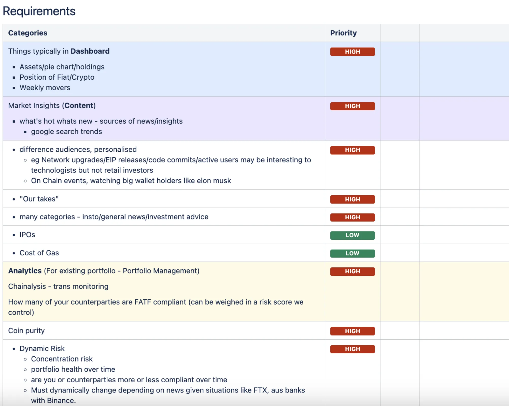

Case study · NAB x Zodia Custody
SAF3, a secure crypto custodian
NAB’s first crypto MVP: a secure, regulated custodian for digital assets.
- The customer
- Crypto native fund managers and ultra high-net-worth individuals
- Team
- Product manager, crypto SME, risk and business analyst, executive, engineering team and me
- Skills

The problem
Institutional and ultra high-net-worth investors needed a secure, regulated way to store and manage digital assets. Existing custody products lacked the controls and trust they required.
How I solved it
- 01Interviewed 10 people interested in crypto, aligned with engineers on what was buildable, and designed the first pass.
- 02Recruited and interviewed 10 more, from institutions like JB Were to crypto-native fund managers, through targeted guerrilla recruitment.
- 03Set hypotheses so the wider team could keep researching discreetly during business development meetings.
- 04Turned insights into product requirements and decision frameworks, and supported development and QA.
Outcome
Delivered an MVP built around what customers needed: custody plus risk management. Leading with custody resonated with fund managers, risk management became a core feature, and customers wanted more coins than just BTC and ETH.
Inside the work




-
Client wants an update on their recent transfer, and asks their fund manager to check
-
Fund manager logs into SAF3 to manage funds on behalf of their client
-
Fund manager reviews the Risk Console, an overview of all actions for the wallets they manage
-
Fund manager can see the client’s transfer is going through compliance checks and is pending
-
Fund manager tells the client which compliance checks are left
What I learned
The research moved our focus from institutions to crypto-native fund managers, and the product was better for it.